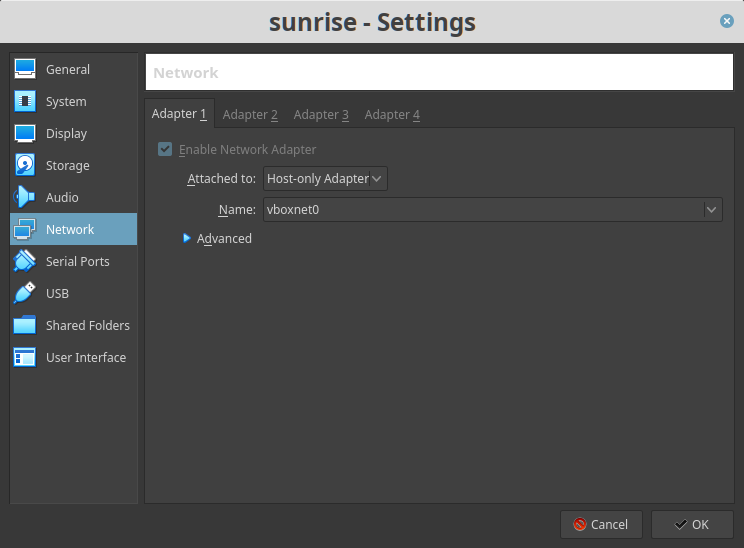
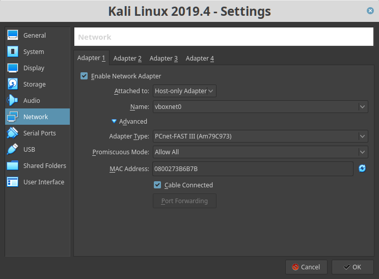
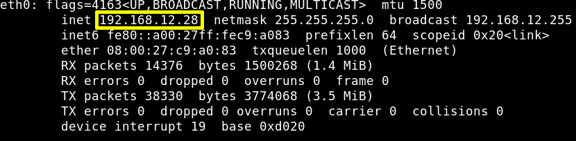
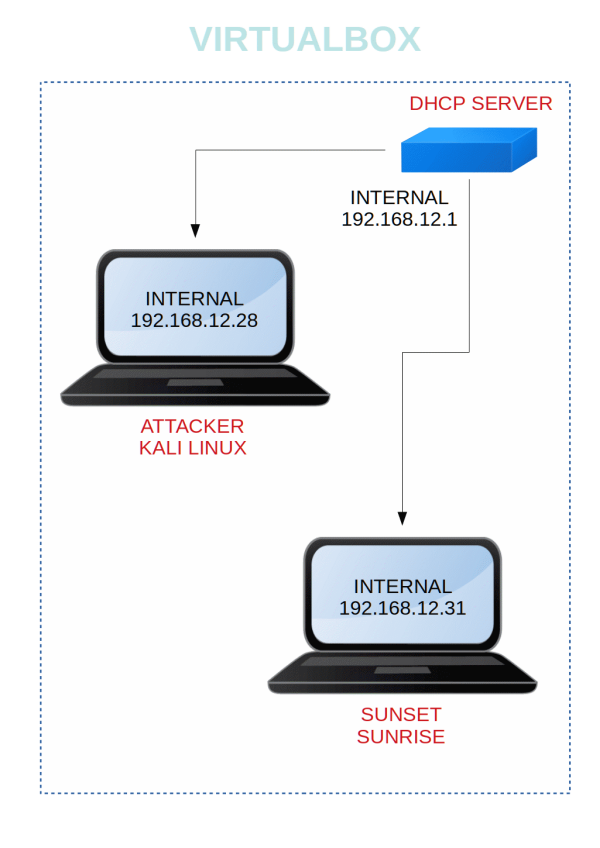

Sunset Sunrise
Penetrating Methodologies
▸ 1. Scan Network
▸ 2. Finding Services and Ports
▸ 3. Browse to the website
▸ 4. Look for vulnerabilities
▸ 5. Enumerate users folders
▸ 6. Exploitation
▸ 6.1 SSH
▸ 6.2 MySQL Service
▸ 7. Post Exploitation
▸ 7.1 Create a wine payload
▸ 7.2 Discovering the second flag
Difficulty: Beginner
Flag: You have to hunt two flags.
Learning: Network scanning | Enumeration | Exploitation | Post Exploitation
Reference: https://www.vulnhub.com/entry/sunset-sunrise,406/
Download (Mirror): https://download.vulnhub.com/sunset/sunrise.7z
Download (Torrent): https://download.vulnhub.com/sunset/sunrise.7z.torrent
Install the machine on VirtualBox:
1. Download the file and extract it.
2. On Virtualbox choose File->Import Appliance.
3. Select the file “ova”.
4. Accept to import.
Virtual Machine Network Settings


Watch your Machine IP.

Diagram

 Index
Index